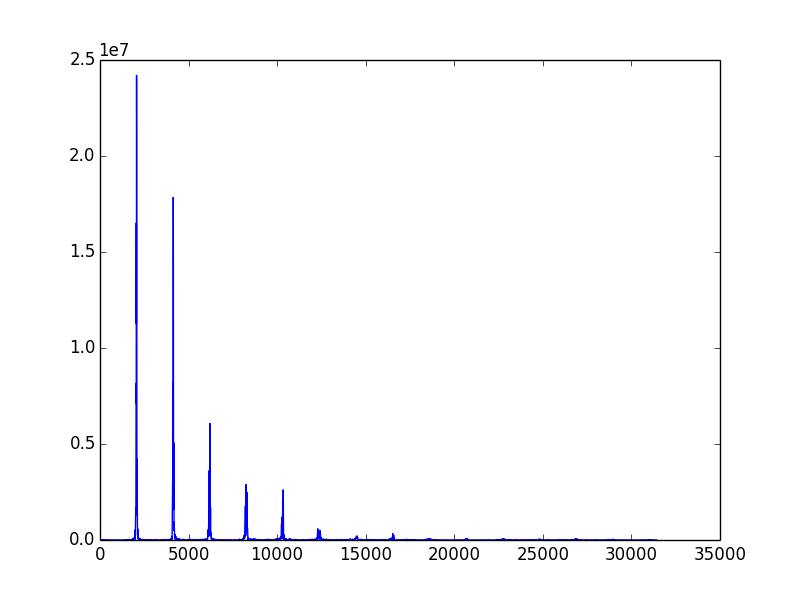
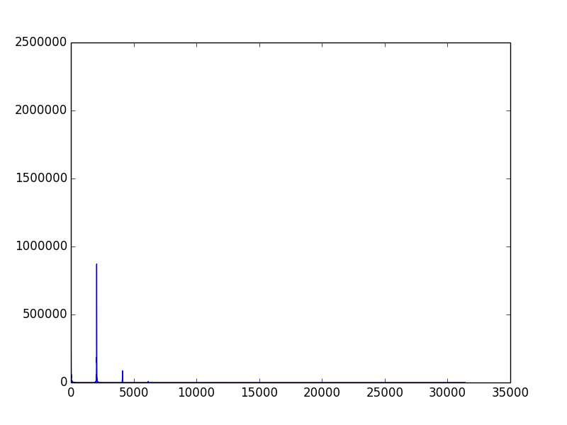
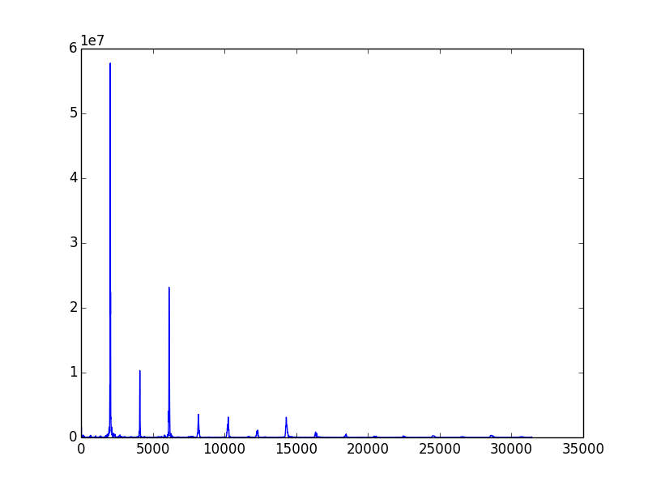
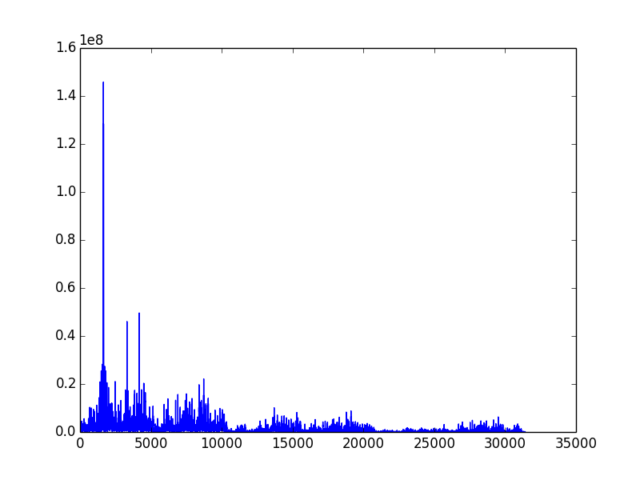
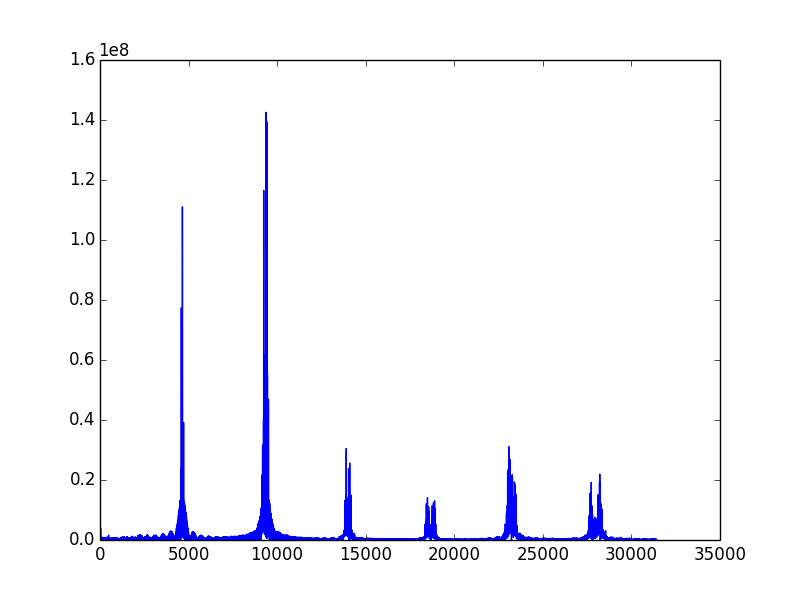

Math480 finalproject
Final Project for Math 480
Math 480 Final Project
Introduction
This project was done for Math 480b at the University of Washington, Spring 2014 by Bryant Wong, Yuki Sheng, and Tony Xu.
The basic premise of our project is that we are interested in figuring out why different instruments sound different, i.e. what makes instruments have different timbres.
Our process is to input some uncompressed audio file of an instrument playing at 440HZ (A4), process that file at a sampling rate of 44.1 kHz, run it through a self-implemented version of the Fast Fourier Transform, and look at the amplitude and frequncies of the resulting sine waves. At this stage, there are various things we can do with this output, some of which we will investigate.
Most of our code is currently written in pure Python, but one of the things we would like to do is to speed up our FFT algorithm by rewriting it in Cython.
Implementation/Process
Initially we were interested in working with Fourier transforms to derive some qualities from an audio clip of a song, such as BPM. However, since we have not done too much with discrete Fourier transforms before, this project was scrapped in favor of the one we have now.
We knew that the Python package numpy already has an extensive implementation of the FFT/DFT, but we felt like that it would 1) be beneficial to our programming skills and 2) add to the mathematical rigor of our project if we implemented an FFT algorithm ourselves. Initially we looked at how other packages like numpy implemented their algorithms. Most use very generalized Cooley-Tukey Fast Fourier Transform algorithms which are extremely optimized, however we decided to use a simpler algorithm that we found more understandable that utilizes recursion. As a result, our FFT algorithm is not very fast, but we think that it's more understandable and clearer to someone who has not had much experience with Discrete Fourier Transforms.
The algorithm we implemented is the following piece of code: # The actual FFT function
def fft(signal):
n = len(signal)
# if the input is only one sample then we can't really do a fft
if n == 1:
return signal
else:
# breaking up into odd and even indices
F_even = fft([signal[i] for i in xrange(0, n, 2)])
F_odd = fft([signal[i] for i in xrange(1, n, 2)])
# defining new empty array with n entries
combined = [0] * n
# implementation of the algorithm
for m in xrange(n/2):
combined[m] = F_even[m] + omega(n, -m) * F_odd[m]
combined[m + n/2] = F_even[m] - omega(n, -m) * F_odd[m]
return combined
This is a simple recursive form of the Cooley-Tukey FFT algorithm in most the simple Radix-2 DIT case. There are many explanations of the algorithim, but in a very simple way, we break up our data into even and odd indices and perform FFTs on these much smaller data sets, which is much faster than trying to compute the FFT across the entire set, reducing the computation time to O( n log n).
Example
For our example, we will take a 1 second clip of an oboe playing A4 (440 HZ) and run it through our algorithm. Here is the original sample:
Running it in our GUI: 
After about a minute, (will implement in Cython ASAP to reduce computation time), the program outputs an image with the frequencies and their associated relative amplitudes: 
One interesting thing that we can do is actually try to reconstruct the sound of the oboe using the information given above using Audacity by adding up a bunch of sine waves with the appropriate frequencies and amplitudes: 
What we get is a sound that is extremely close to the original file:
Other Examples
Here are the outputs of several other samples of other instruments:
Flute: 
Harp: 
Violin: 
Organ: 
Cello: 
Things to do
Possible directions we have been thinking of include some sort of synthesizer where people can blend sounds of different instruments and automatic reconstruction of the sound in Audacity.